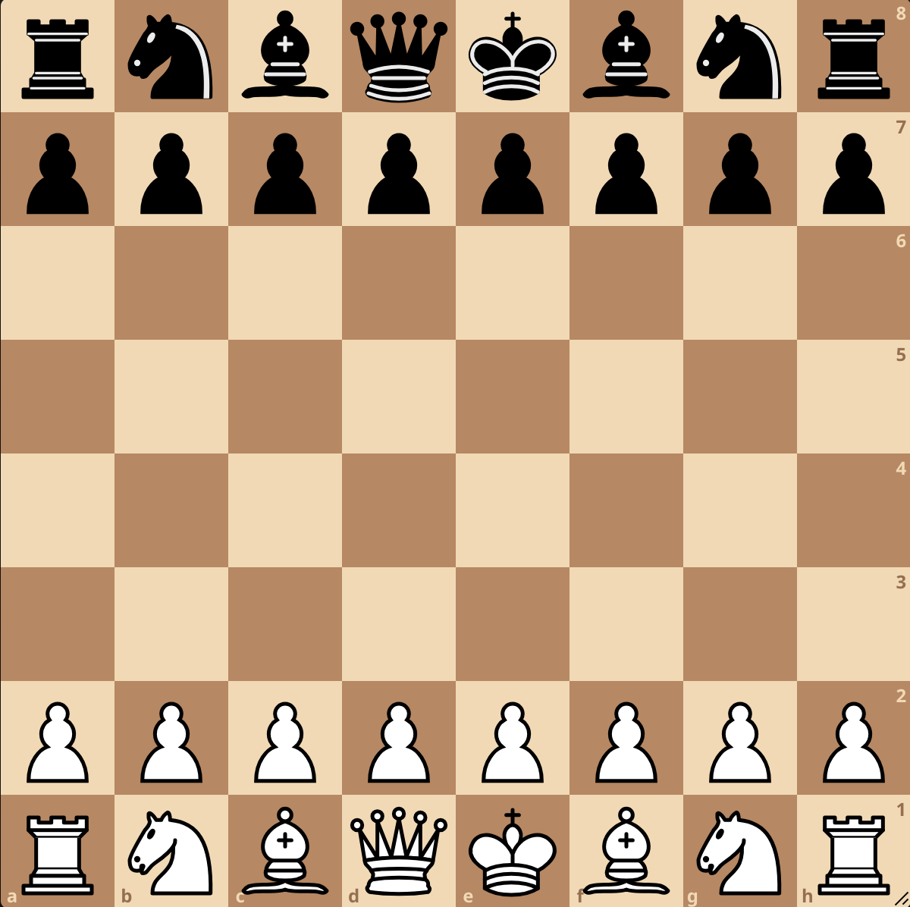

Setting up the Pieces

The board setup is shown. On the second and seventh ranks, both sides will have eight pawns. On the back rank, both sides have two knights, two bishops, two rooks, as well as a king and a queen set up as shown. The king must be on the vertical file marked "e" and the queen must be on the file marked "d"
White moves first, and both players alternate turns after that. Only one move can be made at a time, and players can capture enemy pieces that cross the movement path of their own pieces, with the exception of the pawn. To capture a piece, you cannot "jump over" pieces with the exception of the knight.